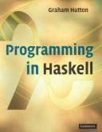
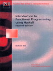
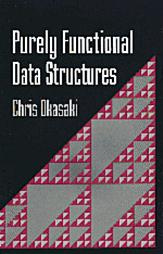
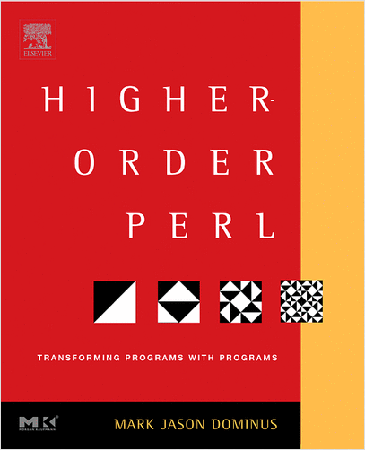

{kind=link}
|  |
Programming
in Haskell by Graham Hutton Cambridge University Press, 2007 A good introduction to the language. |
 |
Introduction Functional Programming using Haskell by Richard Bird, Prentice Hall, 1998 The classic text introducing functional programming in Haskell. Covers some sophisticated topics. errata sheet |
|  |
Purely Functional Data Structures by Chris Okasaki,Cambridge University Press, 1999 An excellent reference on efficient data structures and algorithms in a functional setting. Not required but highly recommended. |  |
Higher-Order Perl: Transforming Programs with Programs by Mark Jason Dominus, Morgan Kaufmann, 2005 This highly praised book applies techniques of function programming in the setting of the Perl programming language. It is available free online HERE. |
 |
Real World Haskell by Bryan O'Sullivan, John Goerzen, Don Stewart, O'Reilly, 2009 Another recent Haskell book with some more advanced material. Available free online HERE. |
{kind=link}
{kind=link}
{kind=link}
{kind=link}
Abstract: Functional programming languages are distinguished from the "ordinary" imperative programming languages you already know ( e.g. Java, C++) by
- their expressiveness over data-types like lists, trees and other inductively defined types.
- They are expression based rather than command based like the other languages you already know, and so, are closer to ordinary mathematics than so-called imperative programming languages.
- In functional languages, functions are first class values (just like strings and ints) and so functional programs can accept functions as arguments and return functions as their values.
- Functional programs are typically more abstract, they read more like specifications than imperative programs do.
Grading and Other Policies: Grades will be based on written
homework, an in-class midterm exam and a final exam. A standard
grading scale will be used, where an overall average of 90%-100% earns
an A, 80%-89% a B, 70%-79% a C, 60%-69% a D and 0%-59% an F. Work is
due at the beginning of class, and late work is accepted for a
few days, or until a solution is distributed, at a substantial
reduction in credit each day. Returned work should be kept for
verification of records.
Midterm Exam |
25% |
| Homework |
45% |
| Final Exam |
30% |
| 100%
|
The professor reserves the right to alter the grading scheme or to take extenuating circumstances into account when assigning grades. Discussion of the course material among students is encouraged, although students are expected to write up their own homeworks. Academic dishonesty will be treated in accordance with university standards. Students are urged to read University regulation 802 , section 3 defines academic dishonesty. .
Class Notes:
Sunil Kothari typed
up lecture notes for a previous version of the course. They can be found on his web-page,
here Class
Notes
Homework:
| No. | Due Date | Assignment | Remarks |
| 1 | Thursday: August 29 |
Read the following:
|
Some files from class: qsort.hs . Nothing to hand in. |
| 2 | Tuesday: August 3 | hw2. |
If you have not already done so, install the Haskell Platform on your computer. Read the notes discussed in class. Here is a clear and interesting set of slides on using the Velleman strategies Click here. |
| 3 | Thursday: September 5 | hw3.pdf | A few proofs about quantified formulas. Use the proof rule sheet handed out in class today or the Velleman style proofs. By the way - you could order a copy of Velleman's book How to Prove It: A Structured Approach. My own lecture notes for COSC 2300 have more detailed explanations and examples of the Sequent proof system [see Chapters 2 and 4]. |
| 4 | Tuesday: September 10 | hw4.pdf | Readh Ch 1 and 2 of LYAHFGG online here. |
| 5 | Thursday: September 12 |
hw5.pdf | Read the assignment before class on Thursday - problems due Tuesday 17th. |
| 6 | Tuesday: September 17 |
hw6.pdf | |
| 7 | Tuesday: September 24 | hw7.pdf | |
| 8 | Thursday: September 26 | hw8.pdf | |
| 9 | Tuesday: October 1 | hw9.pdf | Check out issues #38, #39 and #40 of PragPub magazine for some interesting articles on Haskell. |
| 10 | Tuesday: October 8 | hw10.pdf | Beginning of a sets as lists implementation. interpreter interaction |
| 11 | Thursday: October 10 | Read chapters 7 and 8 of LYAHFGG | |
| 12 | Tuesday: October 15 | hw12.pdf | hw12_base.hs, hw12_expected.txt |
| 13 | Thursday: October 29 | If you have not done so, Read chapters 7 and 8 of LYAHFGG | |
| 13 | Tuesday: November 5 | Watch the video of Eric Meijer from Microsoft Research. Video Lecture . Discussion of parsers starts about 6 minutes in. You can also read about functional parsers in the Higher Order Perl book online: Chapter 8. Even if you don't know perl - pp 376 - 386 is a good presentation of recursive descent parsing. | |
| 14 | Thursday, November 7 | hw14.pdf | Parser.hs Functional Parsing Monadic Parsing in Haskell |
| 15 | Tuesday, 12 November | hw15.pdf | Lambda_parser.hs Parser.hs Term.hs hw15_expected.txt |
| 16 | Tuesday, 19 November | hw16.pdf | Read the Chapter Input and Output in LYAHFGG |
| 17 | Tuesday: 21 November | hw17.pdf | Unification.hs hw17_expected.txt |
| 18 | Tuesday: December 3 | hw18.pdf | TypeInf.hs UnificationPair.hs hw18_expected.txt |
Exams:
- Midterm Exam: TBA
- Final Exam:
- Miscellaneous Resources:
- Haskell:
- Haskell.org
-
Tutorials and Online (free) references
Commercial Users of Functional programming (CUFP).
Google CUFP group
Intellifactory
Jane Street Capital - Haskell.org